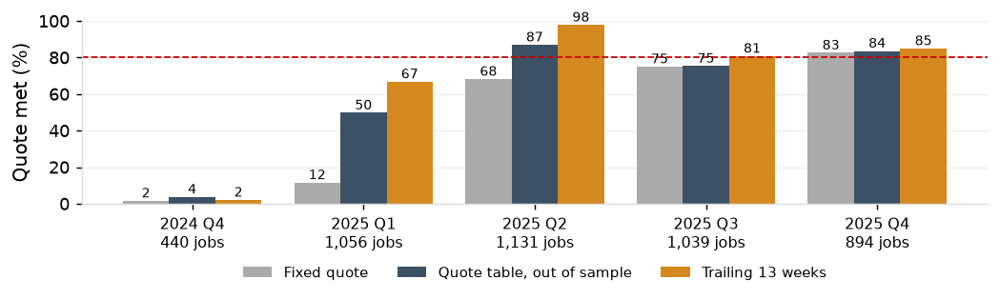

The 10-day repeat quote sits at the 55th percentile of 2025 repeat lead time (69th in Q2 to Q4); standard promises shipped 78.2% on time (94.2%).
Rush lines and short promises are 18.8% of jobs and 52.2% of late jobs in Q2 to Q4; 64.3% of quotes are sent within 3 days.
| Period | Routing class | Jobs | Fixed quote | Percentile of the quote | Median lead time | 80th percentile | 90th percentile | On time, standard promises |
|---|---|---|---|---|---|---|---|---|
| 2025 | Repeat part | 3,767 | 10 | 54.7% | 10 | 18 | 23 | 80.3% |
| 2025 | New part | 481 | 15 | 69.4% | 11 | 20 | 25 | 78.3% |
| 2025 | Outside processing | 997 | 20 | 66.8% | 16 | 27 | 31 | 70.3% |
| 2025 | All | 5,245 | 12.4 | 58.3% | 11 | 19 | 25 | 78.2% |
| 2025 Q2 to Q4 | Repeat part | 2,738 | 10 | 69.1% | 8 | 13 | 16 | 95.3% |
| 2025 Q2 to Q4 | New part | 349 | 15 | 86.8% | 10 | 14 | 17 | 94.3% |
| 2025 Q2 to Q4 | Outside processing | 728 | 20 | 85.2% | 15 | 19 | 22 | 90.1% |
| 2025 Q2 to Q4 | All | 3,815 | 12.4 | 73.8% | 9 | 15 | 18 | 94.2% |
Promised lead times met on 80% of standard promises in every quarter, and quote turnaround of three days or less on 80% of RFQs.

| Action | Owner | When |
|---|---|---|
| Quote table in the order-entry screen: routing class and the brake backlog on the day, never below the fixed quote | Customer service manager, IT | April 2026 |
| Rush flag and a named approver on every promise inside the standard lead time (P2) | Customer service manager | February 2026 |
| Quote turnaround of three days or less on complex RFQs | Estimating lead | March 2026 |
| Lost reason required on every lost quote | Customer service manager | February 2026 |
On the record of 2025: the quote table met on 82.1% of non-rush jobs in Q2 to Q4 out of sample (84.2% as fitted) against 70.5% for the fixed quote, and 86.9%, 75.3% and 83.6% for jobs released in Q2, Q3 and Q4, with 33.9% of promises longer. The adjusted win-rate gap between quotes sent within 3 days and later is 13.3 points.
The quote table refreshed quarterly from the trailing twelve quarters, all quarters included. Hit rate and share of quotes longer than the fixed quote reported monthly.